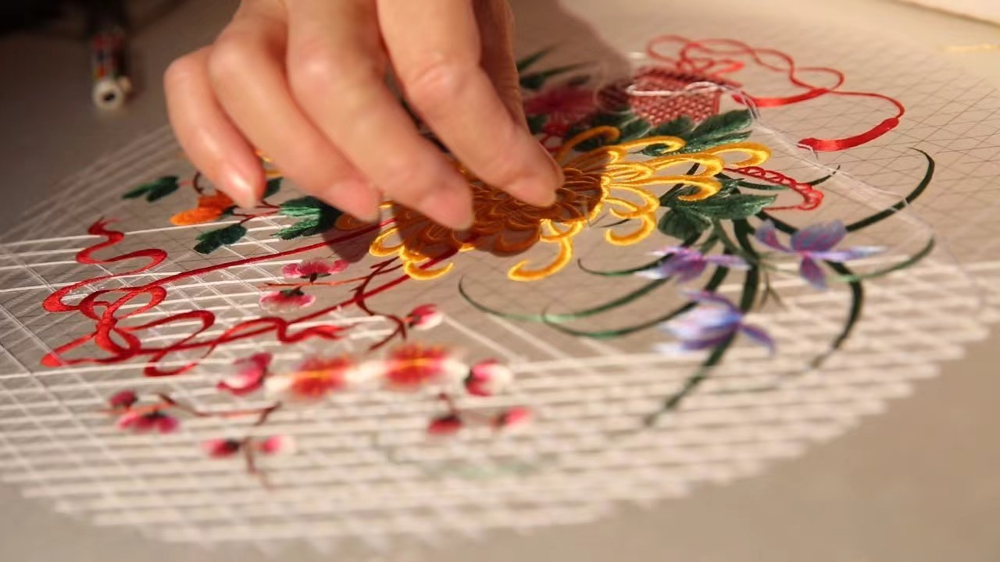
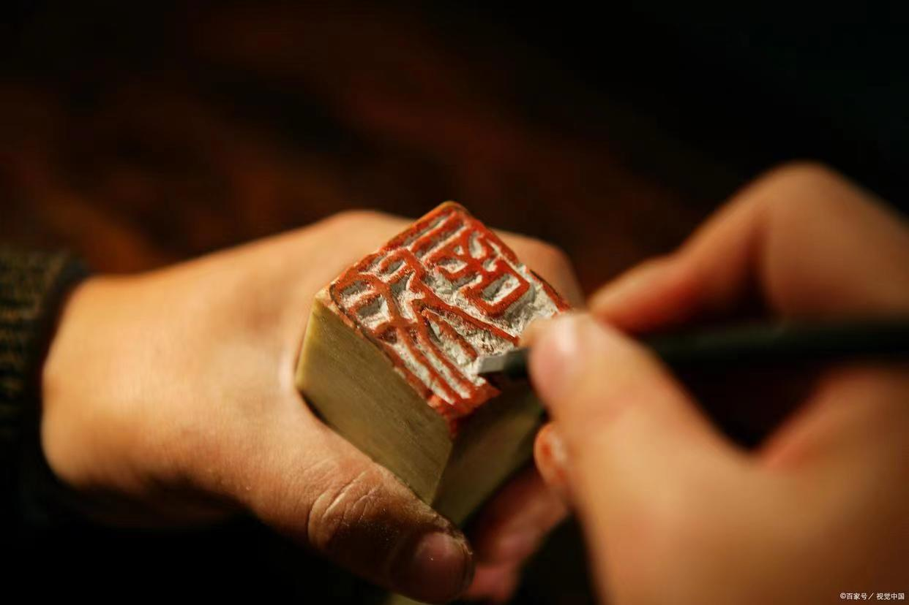
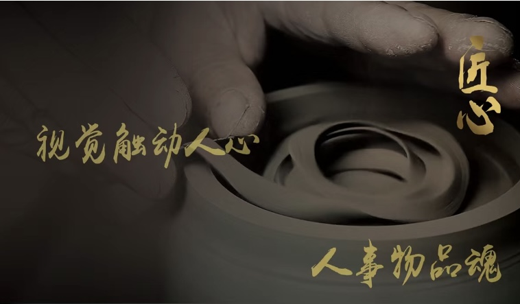

匠心简介
JIANG XIN JIAN JIE
匠心精神是社会文明进步的重要尺度，是中国制造前行的精神源泉、是企业竞争发展的品牌资本。
工匠精神就是追求卓越的创造精神、精益求精的品质精神、用户至上的服务精神
工艺介绍
GONG YI JIE SHAO

蜀绣
是巴蜀地区流行的一种民间工艺，分为川西和川东(今重庆)两大流派， 中国国家地理标志产品。 蜀绣又名“川绣”，与苏绣、湘绣、粤绣齐名，为中国四大名绣之一，是在丝绸或其他织物上采用蚕丝线绣出花纹图案的中国传统工艺。作为中国刺绣传承时间最长的绣种之一，蜀绣以其明丽清秀的色彩和精湛细腻的针法形成了自身的独特韵味，丰富程度居四大名绣之首。

木雕
以雕刻材料分类的民间美术品种。一般选用质地细密坚韧，不易变形的树种如楠木、紫檀、樟木、柏木、银杏、沉香、红木、龙眼等。 采用自然形态的树根雕刻艺术品则为“树根雕刻”。 木雕有圆雕、浮雕、镂雕或几种技法并用。有的还涂色施彩用以保护木质和美化

贝雕
贝雕的制作，关键在于因材施艺，所谓“材”，即天然提供的材料，依势取形，然后用堆、叠、联、粘等方法，制成成品。民间艺人对贝壳的运用，极其高妙。国画有多少种表现形式与构图，就有多少种贝雕画。装框后，灿烂华美，天然贝的组画能永不褪色。

篆刻
篆刻艺术，是于金属、象牙、犀角、玉、石等质材之上雕刻以篆体文字的艺术。因以制作印章为主，又称印章艺术。代表人物有：赵之谦、吴昌硕、厉良玉、齐白石等。 篆刻工艺的材料有水晶、玉、金属、兽角、象牙、竹、木、石料等。其中，使用最广泛的是石料。
打铁花
打铁花表演时，在一处空旷场地搭出六米高的双层花棚，棚上密布新鲜柳枝，上面绑满烟花鞭炮和起货等，棚中间竖立一根六米高的老杆，使花棚总高度达到十米以上。旁边设一熔炉化铁汁， 十余名表演者轮番用花棒将千余度高温的铁汁击打到棚上，形成十几米高的铁花，铁花又点燃烟花鞭炮，再配上“龙穿花”的表演，场景蔚为壮观，呈现出惊险刺激、喜庆热闹的特点。

陶艺
我国已有风格粗犷、朴实的彩陶和黑陶。陶与瓷的质地不同，性质各异。陶，是以粘性较高、可塑性较强的粘土为主要原料制成的，不透明、有细微气孔和微弱的吸水性，击之声浊。瓷是以粘土、长石和石英制成，半透明，不吸水、抗腐蚀，胎质坚硬紧密，叩之声脆。 我国传统的陶瓷工艺美术品，质高形美，具有高度的艺术价值，闻名于世界。